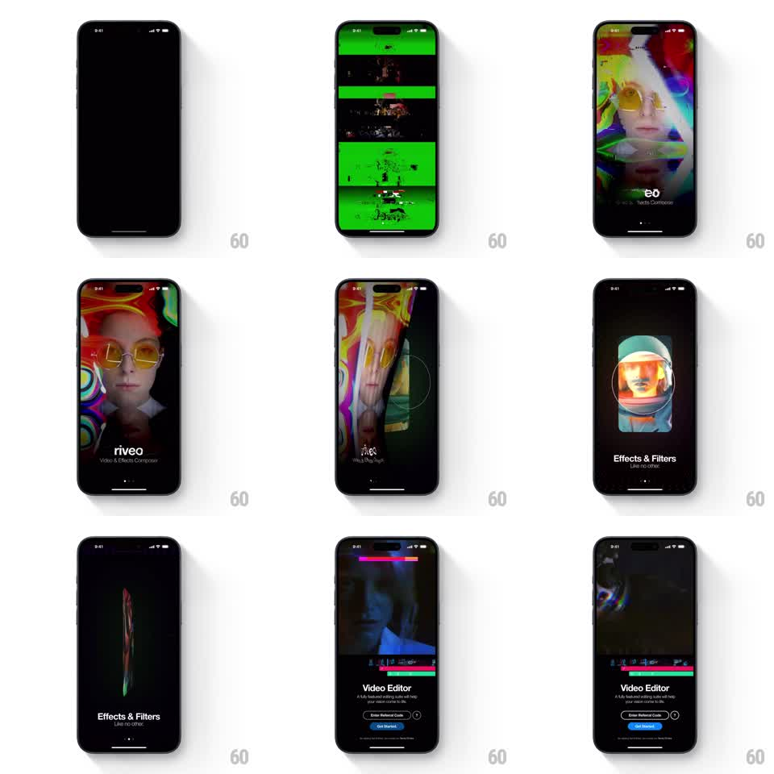

Media
Frame-by-frame

Rebuild this animation 1:1: Riveo's splash - a glitchy cinematic intro of distorted footage and static that page-curls into the onboarding flow.

Rebuild this animation 1:1: Riveo's splash - a glitchy cinematic intro of distorted footage and static that page-curls into the onboarding flow. ## Integration Integration: stack-agnostic spec - springs given as stiffness/damping, timed motions as duration + curve; map every value to your framework and animation library of choice. ## Scene Black screen tears into horizontal green static bars and datamosh-style glitch, resolving into psychedelic distorted footage (chromatic-aberration faces, swirling color) with the "riveo" wordmark and "Video & Effects Composer" tagline. A page-curl swipe peels the scene into onboarding: "Effects & Filters" page, then "Video Editor" with Enter Referral Code and Get Started buttons. ## Motion spec Pattern: glitch intro + page-curl page transitions. - Intro (0-1.5s): static bars slice across the black screen (8-10 horizontal bands sliding at random speeds, 150ms flashes), then the footage resolves through RGB-split distortion (channels converging over 400ms). - The footage plays with continuous analog artifacts: chromatic aberration +-6px, scanline drift, occasional frame tears (horizontal slice offsets, 100ms). - The wordmark types/flickers in over the footage (letter flicker settle, 80ms per glyph). - Swipe (or auto-advance): the current page peels from the bottom-right corner like paper - a curl with a lit underside and soft shadow follows the finger 1:1; release past ~40% completes the turn (spring ~280/26), otherwise it settles back flat. - Each onboarding page enters beneath the curl already composed; its text staggers up after the page lands (150ms, 60ms stagger). ## Calibration - Glitch is texture, not chaos: the footage stays watchable; artifacts accent beats. - The page curl needs real shading - curl highlight, backface tint, and cast shadow - or it reads as a wipe. ## Reduced motion Glitch reduced to a single static flash; pages crossfade. ## Don't miss - The green static bars are the brand's opening signature - keep them acid green on black. - Get Started is the filled primary button; Referral Code stays an outlined secondary.